🎯 На этом уроке ты:
- 📦 создашь модель из 5 деталей и сохранишь их в таблицу
- 🟩 изменишь цвет всех блоков одной командой
- 📈 заставишь башню расти через цикл
- 👻 сделаешь платформы невидимыми или призрачными
- 🌈 раскрасишь башню в цвета радуги из второй таблицы
- 🪜 оживишь лестницу — ступеньки поднимутся по очереди
- 🏰 создашь собственный замок (или робота) и запрограммируешь его
| Этап | Время | Что делаем |
|---|---|---|
| Теория: таблицы для объектов | 10 мин | Таблица — коробка с деталями |
| Задание 1 — Строим башню | 8 мин | Модель Bridge из 5 частей, таблица |
| Задание 2 — Волшебная кнопка | 8 мин | Все блоки становятся зелёными |
| Задание 3 — Башня растёт | 8 мин | Увеличение размера через цикл |
| Задание 4 — Исчезающие платформы | 8 мин | Прозрачность и CanCollide |
| Задание 5 — Радуга | 8 мин | Таблица цветов и покраска |
| Задание 6 — Живая лестница | 10 мин | Анимация подъёма ступенек |
| Задание 7 — Неоновое сияние | 8 мин | Все блоки становятся Neon |
| Задание 8 — Вращение | 8 мин | Поворот всех блоков на 90° |
| Задание 9 — Прыжок в небо | 8 мин | Подъём всех блоков вверх |
| Задание 10 — Мини-проект | 12 мин | Своя модель и три действия |
| Опрос и итоги | 5 мин | Проверяем знания |
| Итого | 90 мин | — |
0 Теория: таблицы — контейнеры для объектов
📦 Зачем нужны таблицы?
Представь, что ты построил мост из 20 деталей и хочешь перекрасить их все в зелёный. Без таблиц тебе пришлось бы писать 20 строк кода. А с таблицей — всего 3 строки!
Таблица в Lua — это как коробка, в которую можно сложить любые объекты: детали, цвета, числа. Все элементы можно перебирать с помощью цикла for.
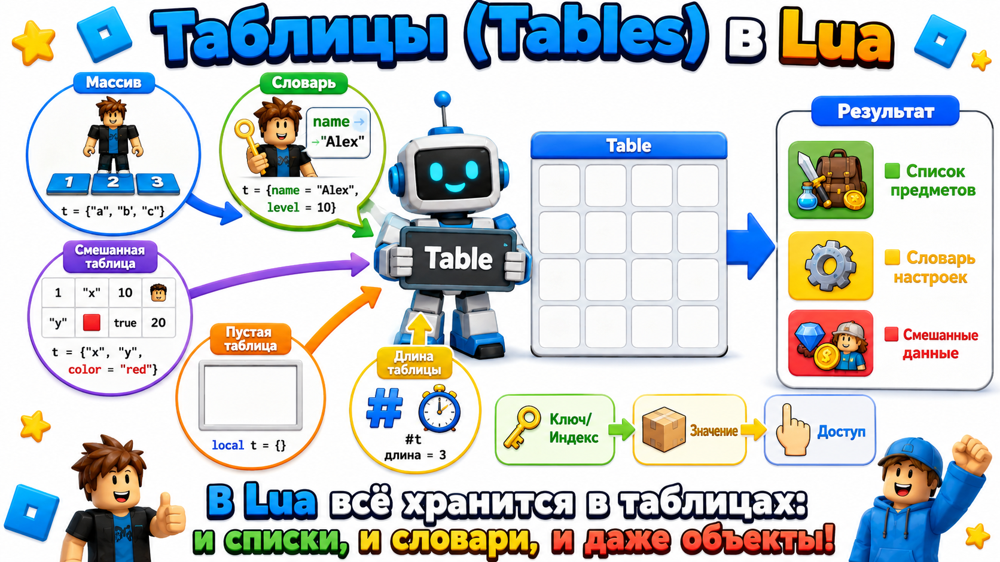
🧩 Таблица из деталей
workspace.Bridge.Block1,
workspace.Bridge.Block2,
workspace.Bridge.Block3,
workspace.Bridge.Block4,
workspace.Bridge.Block5
}
Теперь Bridge[1] — первый блок, Bridge[2] — второй и так далее.
🧩 Типы таблиц: какими они бывают
| Тип таблицы | Как выглядит в коде | Пример для ребёнка | Что это значит |
|---|---|---|---|
| Массив (список по порядку) | t = {"яблоко", "банан", "груша"} |
Плитки 1, 2, 3 в игре | Элементы идут по номерам, начинаем с 1 |
| Словарь (ключ → значение) | t = {name = "Алекс", level = 5} |
Ключ от двери открывает конкретную комнату | Вместо номера — имя (ключ), чтобы сразу найти нужное |
| Смешанная (и то, и другое) | t = {"старт", "финиш", speed = 10} |
В рюкзаке и предметы по порядку, и особые вещи | Можно хранить и по номерам, и по именам сразу |
| Пустая (заготовка) | local t = {} |
Пустой рюкзак перед походом | Создаём таблицу, чтобы потом положить туда данные |
| Длина таблицы | #t |
Считаем, сколько плиток в коридоре | Узнаём, сколько элементов в списке (работает только для порядковых) |
💡 Мини‑примеры с пояснениями
local t = {}— создали пустую таблицу (как пустой инвентарь).t[1] = "меч"— положили предмет на место №1 (как поставили на полку).t.name = "Алекс"— дали таблице имя «Алекс» (как повесили бирку).#t— узнали, сколько всего предметов (как пересчитали всё в рюкзаке).
🔄 Цикл for по таблице
Bridge[i].BrickColor = BrickColor.new("Bright green")
end
#Bridge — это количество деталей в таблице. Цикл проходит по всем и меняет цвет.
local Bridge = {workspace.Bridge.Block1, ...}#Bridge — количество элементовfor i = 1, #Bridge do ... endBridge[i].BrickColor = BrickColor.new("Bright green")Bridge[i].Size = Bridge[i].Size + Vector3.new(0,2,0)Bridge[i].Transparency = 0.7Bridge[i].Material = Enum.Material.NeonBridge[i].Orientation += Vector3.new(0,90,0)Bridge[i].Position += Vector3.new(0,5,0)🌉 Задание 1 — Строим башню
Построй модель из 5 блоков и сохрани их в таблицу.
- В Workspace создай папку (Folder) с именем Bridge.
- Внутри создай 5 блоков друг на друге (Part) с именами Block1, Block2, ..., Block5.
- У всех поставь Anchored = true.
- Создай Script в ServerScriptService и напиши таблицу
Bridge.
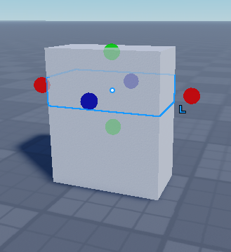
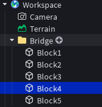
-
local Bridge = {
workspace.Bridge.Block1,
workspace.Bridge.Block2,
workspace.Bridge.Block3,
workspace.Bridge.Block4,
workspace.Bridge.Block5
}
🟩 Задание 2 — Волшебная кнопка
Добавь кнопку (Part + ClickDetector), при клике на которую все блоки моста станут зелёными.
- Создай кнопку GreenButton с ClickDetector.
- Добавь в неё Script.
- В скрипте используй таблицу Bridge и цикл for.
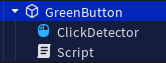
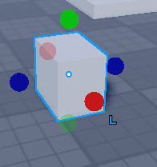
-
local button = script.Parent
local Bridge = {
workspace.Bridge.Block1,
workspace.Bridge.Block2,
workspace.Bridge.Block3,
workspace.Bridge.Block4,
workspace.Bridge.Block5
}
button.ClickDetector.MouseClick:Connect(function()
for i = 1, #Bridge do
Bridge[i].BrickColor = BrickColor.new("Bright green")
end
end)
📈 Задание 3 — Башня растёт
Создай еще одну кнопку с названием ScaleButton, при клике на которую все блоки моста увеличиваются в высоту на 2.
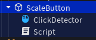
-
for i = 1, #Bridge do
Bridge[i].Size = Bridge[i].Size + Vector3.new(0, 2, 0)
end
👻 Задание 4 — Исчезающие платформы
Сделай кнопку GhostButton, которая превращает все блоки в полупрозрачные призраки (Transparency = 0.7, CanCollide = false).
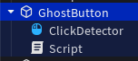
-
for i = 1, #Bridge do
Bridge[i].Transparency = 0.7
Bridge[i].CanCollide = false
end
🌈 Задание 5 — Радуга
Создай в скрипте ServerScriptService таблицу Colors из 5 цветов и раскрась каждый блок моста в свой цвет.
-
local Colors = {
BrickColor.new("Bright red"),
BrickColor.new("Bright orange"),
BrickColor.new("Bright yellow"),
BrickColor.new("Bright green"),
BrickColor.new("Bright blue")
}
for i = 1, #Bridge do
Bridge[i].BrickColor = Colors[i]
end
🌈 Задание 6 — Радужная лестница
Создай лестницу из 7 ступенек (Step1...Step7) в папке Stairs и заставь её постоянно переливаться
разными цветами, как бегущая радуга. Скрипт в ServerScriptService. Используй две таблицы: одну для ступенек, другую для цветов.
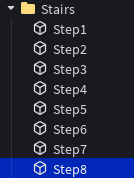
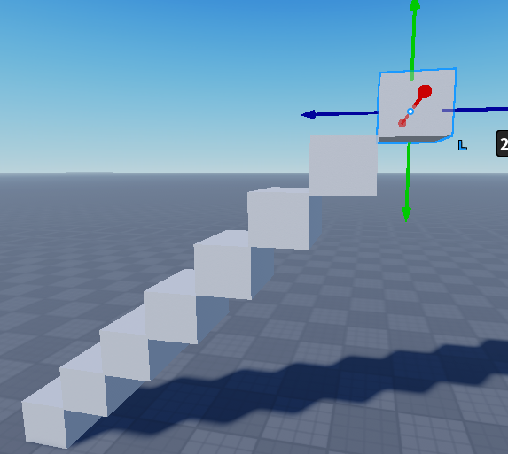
-
-- 1. Таблица всех ступенек лестницы
local Steps = {
workspace.Stairs.Step1,
workspace.Stairs.Step2,
workspace.Stairs.Step3,
workspace.Stairs.Step4,
workspace.Stairs.Step5,
workspace.Stairs.Step6,
workspace.Stairs.Step7,
}
-- 2. Таблица цветов радуги (каждый цвет — отдельный элемент)
local Colors = {
BrickColor.new("Bright red"),
BrickColor.new("Bright orange"),
BrickColor.new("Bright yellow"),
BrickColor.new("Bright green"),
BrickColor.new("Bright blue"),
BrickColor.new("Bright violet"),
BrickColor.new("White")
}
-- 3. Бесконечный цикл: будет повторяться, пока игра работает
while true do
-- 4. Проходим по всем ступенькам и красим каждую в свой цвет
for i = 1, #Steps do
Steps[i].BrickColor = Colors[i]
end
-- 5. Ждём 0.8 секунды, чтобы увидеть смену цветов
task.wait(0.8)
-- 6. Сдвигаем таблицу цветов:
-- удаляем первый цвет (красный) и добавляем его в конец
local first = table.remove(Colors, 1)
table.insert(Colors, first)
end🧠 Как это работает простыми словами:
- Строки 1–9: собираем все ступеньки в одну «коробку» с именем
Steps. Теперь мы можем обращаться к любой ступеньке по номеру:Steps[1]— первая,Steps[2]— вторая и т.д. - Строки 11–19: создаём ещё одну «коробку»
Colorsдля семи цветов радуги. Каждый цвет — это как краска в баночке. - Строки 21–30: бесконечный цикл (
while true do) будет повторяться без остановки. - Строки 23–25: внутри цикла мы идём по всем ступенькам (
for i = 1, #Steps do) и красим каждую в цвет с тем же номером из таблицыColors. Например, первая ступенька станет красной, вторая — оранжевой. - Строка 27: команда
task.wait(0.8)говорит игре: «Подожди 0.8 секунды». За это время мы видим результат. - Строки 29–30: самое интересное! Мы берём первый цвет (красный), удаляем его из таблицы и тут же вставляем обратно, но уже в конец. Теперь порядок цветов сдвинулся: оранжевый стал первым, красный — последним. При следующем повторении цикла ступеньки окрасятся уже по-новому. Получается эффект бегущей радуги!
- Строки 1–9: собираем все ступеньки в одну «коробку» с именем
💡 Задание 7 — Неоновое сияние с PointLight
Создай кнопку NeonButton, при клике на которую все блоки моста загорятся неоном, а внутрь каждого блока добавится источник света (PointLight). С каждым новым кликом яркость будет расти, потому что источников становится больше!
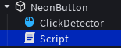
-
local button = script.Parent
local Bridge = {
workspace.Bridge.Block1,
workspace.Bridge.Block2,
workspace.Bridge.Block3,
workspace.Bridge.Block4,
workspace.Bridge.Block5
}
button.ClickDetector.MouseClick:Connect(function()
for i = 1, #Bridge do
-- 1. Включаем неоновый материал
Bridge[i].Material = Enum.Material.Neon
-- 2. Создаём новый источник света
local light = Instance.new("PointLight")
light.Brightness = 1
light.Range = 5
light.Color = Color3.fromRGB(255, 255, 255)
light.Parent = Bridge[i]
end
end)🧠 Что происходит:
- При первом клике все блоки становятся неоновыми, и внутри каждого загорается лампочка (PointLight).
- При втором клике в каждый блок добавляется ещё одна лампочка, поэтому свет становится ярче.
- Чем больше кликов — тем больше лампочек и ярче сияние!
- Если хочешь, можешь менять цвет лампочек (
Color3.fromRGB(255,0,0)— красный и т.д.).
📘 Что означают настройки лампочки:
- Brightness = 1 — яркость лампочки. 1 — нормальная, 2 — вдвое ярче, 0.5 — тусклее. С каждой новой лампочкой свет становится сильнее.
- Range = 5 — на сколько кубиков (ступенек) вокруг распространяется свет. 5 — среднее расстояние. Увеличь до 10 — будет светить далеко.
- Color = Color3.fromRGB(255, 255, 255) — цвет света. Три числа: красный, зелёный, синий. Все 255 — белый. Поменяй на (255,200,0) — станет оранжевым.
- Parent = Bridge[i] — помещает лампочку внутрь блока. Без этой строчки свет просто висел бы в воздухе и не освещал бы мост.
💡 Поэкспериментируй: попробуй менять числа и цвета, чтобы создать разноцветное сияние!
🔄 Задание 8 — Вращение
Создай кнопку RotateButton, которая поворачивает все блоки на 90 градусов вокруг вертикальной оси (Y).
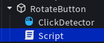
-
for i = 1, #Bridge do
Bridge[i].Orientation += Vector3.new(0, 90, 0)
end
⬆️ Задание 9 — Прыжок в небо
Создай кнопку JumpButton, которая поднимает все блоки башни на 5 единиц вверх с анимацией (пауза 0.1 сек между блоками).
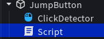
-
for i = 1, #Bridge do
Bridge[i].Position += Vector3.new(0, 5, 0)
task.wait(0.1)
end
🏰 Задание 10 — Мини-проект «Замок»
Построй свою модель (замок, ракету, робота, машину, дерево) минимум из 8–10 деталей. Сохрани все детали в таблицу. Через цикл выполни минимум три действия: измени цвет, увеличь размер, подними вверх, сделай прозрачными, поверни, включи Neon и т.д.
for i, part in ipairs(MyModel) do part.Material = Enum.Material.Neon; part.Size = part.Size * 1.2; part.BrickColor = BrickColor.Random() end🧩 Быстрая проверка
1. Что такое таблица?
2. Как получить количество элементов в таблице?
💭 Твой опыт
Оцени занятие: